本节目标
建立"动态SLAM"的问题框架：动点为什么会毁掉定位，以及学界的两大应对思路（几何 / 语义）。
和前面课程怎么接
前面的视觉 SLAM、激光 SLAM 都默认静态世界。这一节引入"动点"这一现实扰动，是后续语义 SLAM、目标跟踪的入口。
1. 为什么动态环境是死穴
传统视觉 SLAM（以 ORB-SLAM 家族、VINS-Mono 为代表）在静态场景里很强，但一到动态、不可预测的环境就吃瘪：走动的人、行驶的车会把"用来算相机运动的特征点"带偏。论文用一张三层同心圆把"动态视觉 SLAM 处在什么位置"画得清清楚楚——
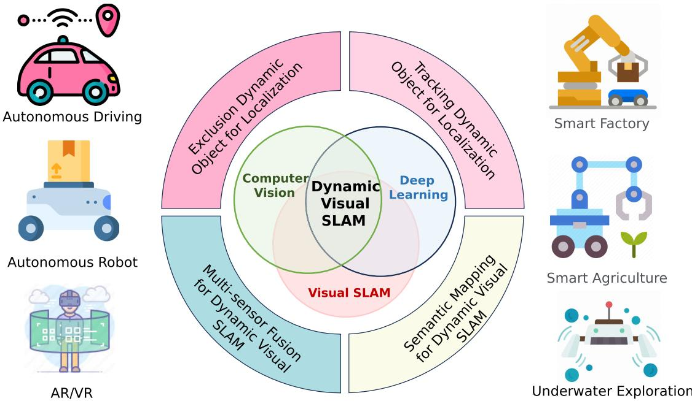
怎么看这张图： 它告诉你动态 SLAM 是个"交叉地带"——内核是视觉 SLAM，外圈借力计算机视觉与深度学习，再往外是应用（AR、自动驾驶、机器人）。中间层那圈"分类"正是本综述的骨架：几何法 → 语义法（剔除 / 跟踪 / 建图）→ 多传感器融合。
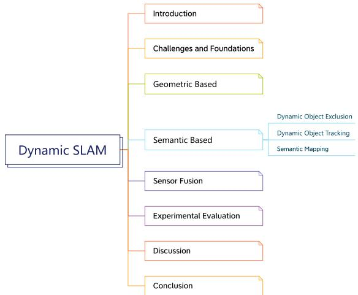
怎么看这张图： 把它当成本节课的地图：II 节讲挑战与几何基础 → III 纯几何法 → IV–VII 语义法（剔除、跟踪、建图）→ VIII 多传感器融合 → IX 实验评测 → X 讨论。跟着这张图读，不会迷路。
动态物体的破坏力体现在三处：地图一致性（动点被当成静止结构永久写进地图）、特征跟踪可靠性（匹配被动点带偏）、以及由此引发的系统鲁棒性下降。所以"如何判断一个点是不是动的"是整篇的核心技术问题。
互动判断
动态物体主要威胁 SLAM 的哪一块？
2. 几何方法：用对极与多视图约束揪出动态点
最早、也最"轻量"的思路是纯几何：不训练任何模型，只用相机几何本身判断"哪些点不守规矩"。论文给了两条经典约束。
对极几何约束（Epipolar Geometry）
对两帧图像 $I_1, I_2$ 中正确匹配的特征点 $\mathbf{u}_1, \mathbf{u}_2$，若场景静止，它们满足基础矩阵（fundamental matrix）约束：
也就是说，$\mathbf{u}_2$ 必须落在由相机运动决定的一条极线上。论文用"特征点到极线的距离"来量化违例：
若 $d_e$ 超过阈值 $d_{\mathrm{th}}$，这个点就是动态点——因为它"不守"相机运动规定的极线约束。多视图约束则更进一步：把点反投影到邻近若干关键帧的 3D 空间，再投回去看位置差；若差超过阈值 $d_{m\mathrm{th}}$，判为动态。
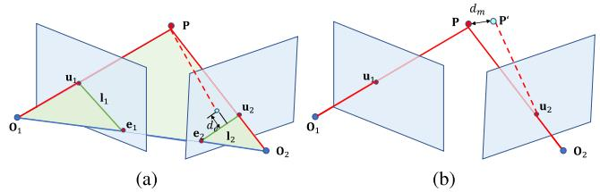
怎么看这张图： (a) 画的是两帧之间，静态点的匹配必须落在极线上；动点（图中偏离极线的点）会"掉出"这条线，于是被挑出来。(b) 是多帧版本的思路：同一点在多个关键帧里的投影应当一致，不一致即判动。几何法的好处是不依赖任何训练数据。
助教提醒：OCR 修正（数学符号）
原文公式里把相机中心写成了 $\mathbf{0}_1\mathbf{0}_2\mathbf{P}$（数字 0），但相机中心字母是 O（如 $\mathbf{O}_1,\mathbf{O}_2$），不是数字零。我已在上面的讲解里改回字母 O。这是 PDF 转 Markdown 时"O/0 不分"的典型坑，看公式时务必警惕。
几何法的优点（论文 III-B 节总结）：简单、不依赖预训练模型、在结构化环境里效率高。缺点也致命：高度依赖"特征质量"；当动点太多，静态特征被淹没，定位就崩；而且它缺乏语义理解——纯靠几何有时分不清"静止的人"和"静止的柱子"。这就引出了语义方法。
3. 语义方法：检测 / 分割，以及那个"TV 还是显示器"之谜
语义路线的核心：用深度学习给画面里的东西"贴标签"，知道"这是人 / 车 / 电视"，于是可以直接把已知会动的那类物体上的特征剔除或单独跟踪。论文用一张图对比了四种获取语义信息的方式——
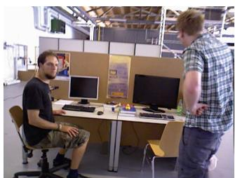
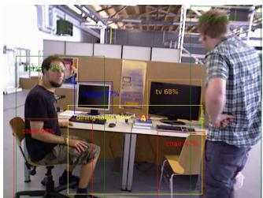
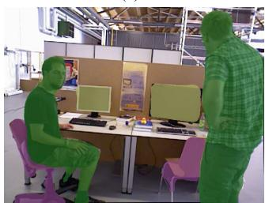
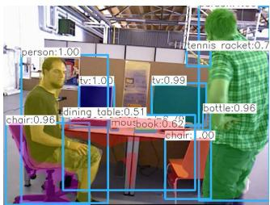
怎么看这张图： 四张小图是同一场景的四种"理解层级"：(b) 只画框（这是什么类）；(c) 像素级分类（每个像素属于哪类）；(d) 实例级（区分"第几个"同类物体）。真正的教学金矿在 (d) 的标注——模型说它是 TV，可你肉眼觉得是显示器。这暴露一个深刻问题：标签体系 ≠ 物理真值，数据集的偏见会变成系统的先验。一个为"排除动态物体"而训练的 SLAM，会因为它"相信"那是 TV（通常放那不动）而可能误判其动态性。
助教提醒：OCR 修正
原文多处把 "Instance segmentation" 误识别成 "Instace segmentation"（TABLE III、IV），把 "Object detection" 误成 "Object detectation"（TABLE V），又把 "Fig. 4 illustrates thr epipolar" 的 "thr" 写成 "the"；第 III 节标题 "APPROACHESIN DYNAMIC SCENES" 漏了空格。另外第 I 节首句 "ISUAL SLAM" 漏了开头的 V，应为 VISUAL SLAM。我已逐一修正。
论文把语义法进一步拆成三个子方向（对应 IV / VI / VII 节）：
① 动态物体剔除（V 节）
判定为动的点直接不进位姿估计。提升精度，但依赖分割质量，且吃算力。
② 动态物体跟踪（VI 节）
不只剔除，还跟踪动点、预测其运动，甚至把暂时静止的车当临时路标。适合高动态场景。
③ 语义建图（VII 节）
在建图时写入物体标签，产出"带语义的八叉树地图"，支撑人机交互、AR。
4. 方法谱系：三张表怎么读
综述用 TABLE II / III / IV / V 把代表方法按"用什么判动态、什么传感器、适用场景"列成家谱。我按主线给你串一遍。
几何家族（TABLE II：纯几何动态 SLAM）
代表：Kim et al. 2016（RGB-D，背景建模）、StaticFusion 2018（聚类 + 动态概率）、RP-VIO 2021（单目+IMU，用平面特征专攻动态）、DynaVINS 2023（单目+IMU，鲁棒集束调整）。共性：靠光流、平面、运动模型等几何手段判动态，不碰深度学习。
语义定位家族（TABLE III：用语义信息做定位）
代表：DS-SLAM 2018（语义分割 + 对极几何）、DynaSLAM 2018（关键帧静态加权）、DynaSLAM II 2021（实例分割 + 多视图，且跟踪物体）、DRG-SLAM 2022（点+线+面 + 语义分割 + 对极 + 多视图）。注意一个趋势：语义 + 几何混用越来越多。
语义建图家族（TABLE IV：用语义信息建图）
代表：MaskFusion 2018（带语义标签的 surfel）、MID-Fusion 2019（TSDF + 语义标签）、SG-SLAM 2023（Octomap + 3D 语义物体）、Cube-SLAM 2019（用检测结果造立方体）。地图类型从"点 / surfel"走向"带物体标签的语义地图"。
多传感器融合家族（TABLE V）
代表：Dynamic-VINS 2022（RGB-D+IMU，目标检测 + 深度）、DGM-VINS 2023（实例分割 + DBSCAN + 对极）、TwistSLAM++ 2023（立体+激光）、DynamSLAM 2023（立体+IMU，场景流）。融合让系统在不同传感器失效时仍能撑住。
读表的小心机
表里 "Dynamic Object Tracking" 列用 √ 标记是否跟踪动点。你会发现：越往后（语义建图、融合），打 √ 的越多——说明"剔除"只是第一步，"理解并跟踪"才是更完整的方案。
5. 典型管线与实例结果
把上面所有思路收进一条"标准管线"，论文用 Fig. 6 画了出来；再用 Fig. 7、Fig. 8 给出两个真实系统的截图。
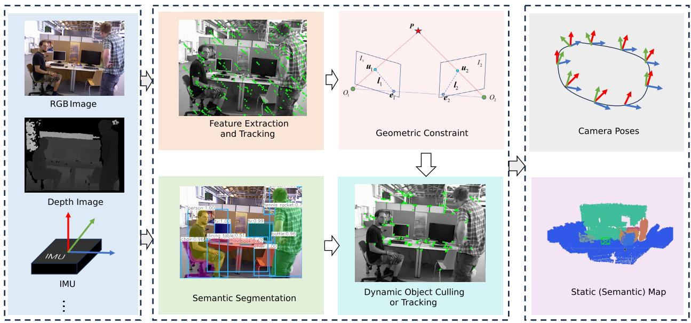
怎么看这张图： 这就是第 4 节家谱的"总装图"：左路是经典 SLAM 前端（特征→跟踪），右路是语义分支（检测/分割），两路在"动态判断"汇合，再决定"剔还是跟"，最后出图。记住这个结构，你读任何一篇动态 SLAM 论文都能对号入座。
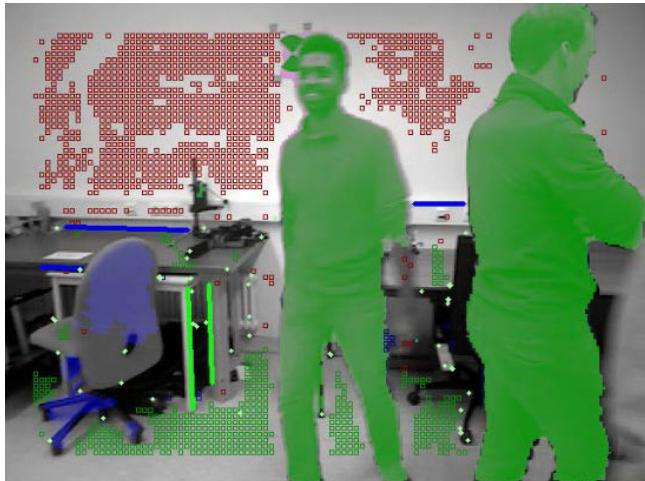
怎么看这张图： 注意画面里的人——他们的特征点被"抠掉"了（不再参与建图），背景的静态结构被干净保留。这正是"语义 + 几何"协同的直观效果：语义负责"认出是人"，几何负责"确认他确实在动"。
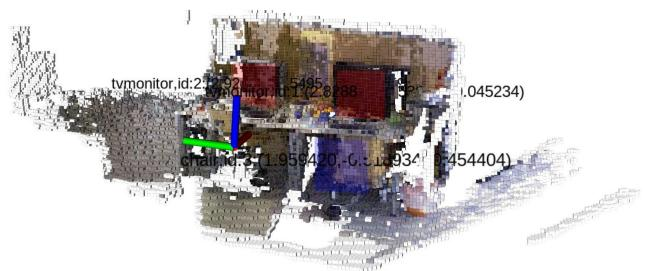
怎么看这张图： 与 Fig. 7 不同，这里不只是"剔除动点"，而是产出一张带物体标签的语义八叉树地图——墙、家具、地面各有语义。这就是 VII 节"语义建图"的落地：地图从"一堆点"升级成"机器能读懂的房间描述"，是 AR、服务机器人的关键资产。
6. 代价：精度不是唯一的轴
这是原文最硬的一句批评，也是很多"刷精度"论文不会告诉你的：语义法虽准，但很多需要桌面级算力与 GPU，限制了在真实机器人平台上的部署。论文 TABLE VI 在 TUM RGB-D 动态数据集上，把各方法的定位误差（RMSE）和每帧耗时并列给出。挑最刺眼的两组对比：
| 方法 | walking_rpy 精度 (RMSE, m) | Tracking 耗时 | Semantic 耗时 | 部署平台 |
|---|---|---|---|---|
| DynaSLAM [6] | 0.1360 | 237.57 ms / 帧 | 195.00 ms / 帧 | 桌面级 GPU（原论文用 Tesla M40） |
| Dynamic-VINS [122] | 0.0629 | 5.54 ms / 帧 | —（轻量） | 嵌入式 Jetson AGX Xavier |
| SG-SLAM [115] | 0.0324（全场最佳） | 39.51 ms / 帧 | — | 常规 |
| DS-SLAM [5] | 0.4442 | 76.45 ms / 帧 | 37.57 ms / 帧 | 常规 |
这张表讲了三件事：
- "精度不是唯一的轴"：DynaSLAM 在 walking_rpy 上 0.1360 看似不差，但它每帧要 237.57 + 195.00 ≈ 432 ms——也就是大约 2.3 帧/秒，只能在桌面 GPU 上跑；而 Dynamic-VINS 在嵌入式 Jetson 上每帧只要 5.54 ms（约 180 帧/秒），walking_rpy 反而更好（0.0629）。能上机器人平台的，往往比"实验室最准的"更有用。
- 最准的不一定是 heaviest 的：SG-SLAM 以 0.0324 拿下 walking_rpy 最佳，却只需 39.51 ms/帧——说明"轻"和"准"并非零和。
- 序列难度 exposes 短板：walking_rpy（大幅度旋转平移 + 动点）是最难的序列，DS-SLAM 在这里掉到 0.4442，说明某些方法在剧烈运动时并不鲁棒。
互动判断
依据 TABLE VI，下面哪个结论最站得住？
7. 作者的两条自陈与启示
综述结尾，作者诚实地给自己划了两条边界，这对我们读任何 SLAM 综述都该成为"默认怀疑"：
① 没有单一方法普遍更优
原文（IX-B 节）："no single method emerges as universally superior"。选哪个，取决于你的环境动态程度、算力、以及是否需要语义理解。所以别迷信"某一篇 SOTA"。
② 语义建图质量无法定量评估
原文（IX 节）："the quantitative assessment of semantic mapping quality remains challenging, localization accuracy serves as a proxy"。即：我们只能用定位精度当代理指标来间接判断地图好坏——但"地图语义对不对"并没有公认的量化标准。这意味着很多语义 SLAM 的"好"，其实是用定位精度"代考"的。
最后用一张时间线（Fig. 2）收尾——它把从几何到语义、再到融合的关键方法按年份排开，直观展示"演进"二字：早期（2016–2018）以几何 / 轻量语义为主，2020 后实例分割、多传感器融合密集出现。
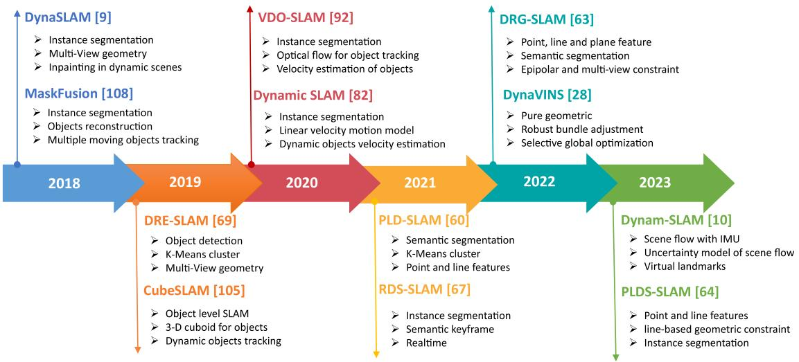
怎么看这张图： 横轴是年份，点是方法。你会看到节点越往后越密——说明这个方向在 2020 年后爆发；也能看到方法从"纯几何 / 单模态"逐步走向"深度学习语义 + 多传感器融合"。把它和 Fig. 1 的中间层分类对照着看，主线就完整了。
- 对极几何约束 $\mathbf{u}_2^{\mathrm{T}} \mathbf{F} \mathbf{u}_1 = 0$ 说的是什么？为什么"距离极线过远"就能判一个点动态？
展开查看答案
它说：若两点来自同一个静止三维点，则第二帧的匹配点必须落在由相机相对运动决定的极线上。动态点不遵守这个由相机运动决定的约束，所以它会明显偏离极线；用点到极线的距离 $d_e$ 超过阈值即可判为动态。本质是"用几何一致性检验运动一致性"。 - Fig. 5(d) 中实例分割把显示器识别成 TV。为什么说"标签体系 ≠ 物理真值"？这对一个"剔除动态物体"的 SLAM 有什么隐患？
展开查看答案
标签来自训练数据集的分类标准（该数据集把这类屏幕归为 TV），并非物体的物理本质。隐患：SLAM 若"信任"标签来决定是否剔除，可能因错误/僵化的类别先验，把本应保留或本应剔除的特征处理错；数据集偏见会静默地变成系统偏见。 - 纯几何法和语义法，各自最大的"软肋"是什么？（提示：看 III-B 与 V-B 节的 Advantages/Limitations）
展开查看答案
几何法：依赖特征质量，动点过多时静态特征被淹没而失效，且缺乏语义理解（分不清"静止的人"和"静止的柱子"）。语义法：依赖分割精度（分错就剔错），且实时分割带来显著算力开销，很多需桌面 GPU。 - 按 TABLE VI，若你要在一台嵌入式无人机上部署动态 SLAM，为什么 Dynamic-VINS 比 DynaSLAM 更现实？请给出具体数字。
展开查看答案
DynaSLAM 每帧约 237.57 + 195.00 ≈ 432 ms，只能跑在桌面级 GPU（Tesla M40）上；Dynamic-VINS 在 Jetson AGX Xavier 嵌入式平台每帧仅 5.54 ms（约 180 FPS），且 walking_rpy 精度 0.0629 反而优于 DynaSLAM 的 0.1360。无人机带不动桌面 GPU，所以后者更现实。 - 论文说"语义建图质量无法定量评估，只能用定位精度作 proxy"。这给我们比较两篇语义 SLAM 论文时提了什么醒？
展开查看答案
提醒：当两篇论文都用定位 RMSE 证明自己"地图更好"时，这个证据是间接的——RMSE 好只说明定位好，并不直接证明语义标签 / 物体级地图正确。应追问是否有其他语义质量的定性或人工评估，避免把"定位 proxy"当成"建图真值"。